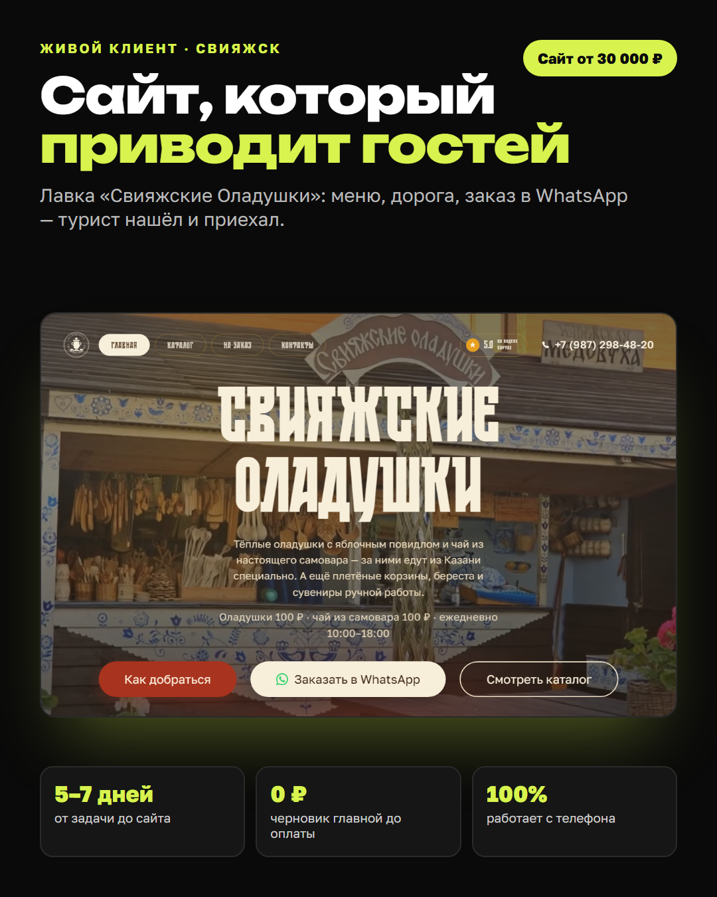
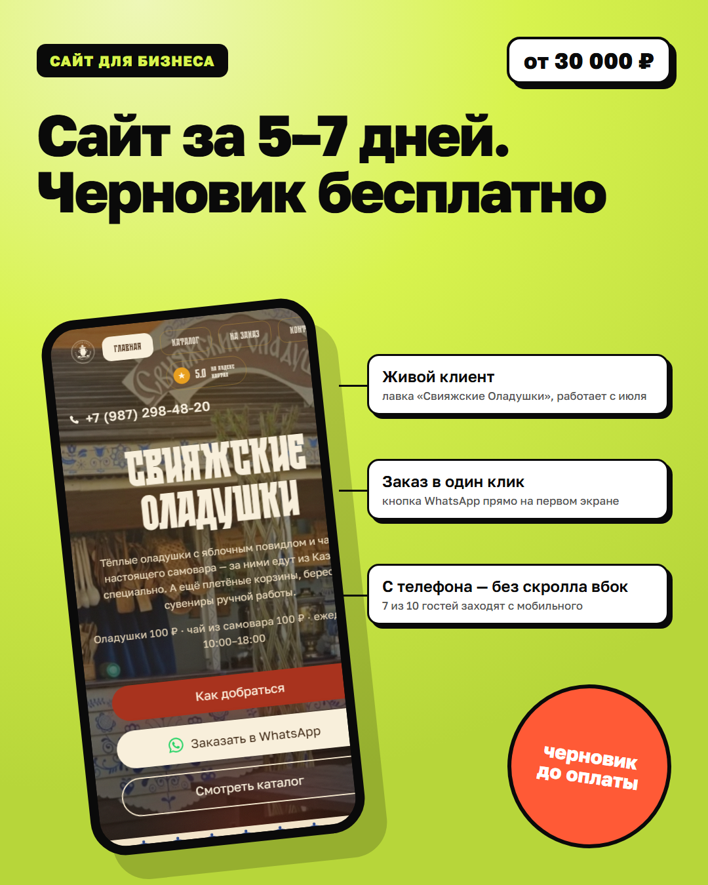
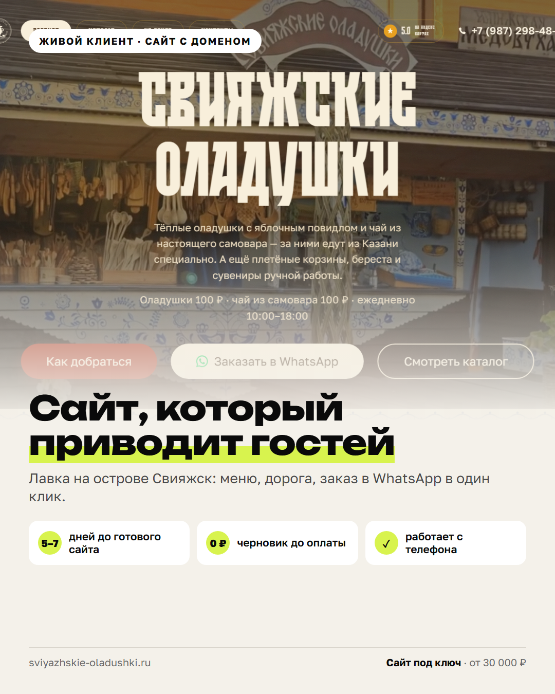

Собрано по правилам инфографики для Авито: лента квадратная, заголовок 3–5 слов, визуал 60–75% кадра, 2–4 выноски и бейджи доверия, без контактов. Формат 1080×1350 — в ленте режется до квадрата почти без потерь. Выбери один — перерисую все 14.
Чёрный фон, крупный скрин, три бейджа цифрами. Читается как «дорого».

Яркий фон, телефон под углом, выноски к деталям, стикер и ценник. Так оформлены топовые карточки на Авито и WB.

Фото во весь верх, снизу светлая плашка с заголовком и тремя иконками-бейджами.
